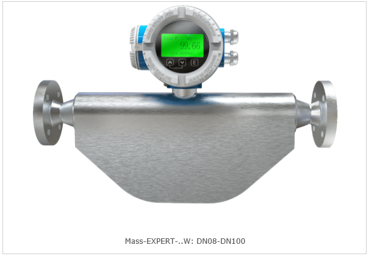
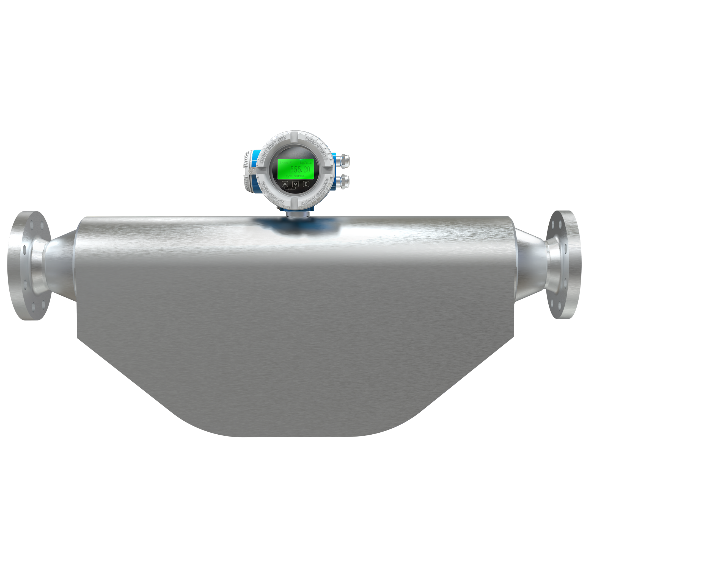

W-образный микроизгиб — компактное решение для ограниченного пространства. Идеально подходит для встраивания в шкафы управления, щитовые конструкции и дозирующие установки, где каждый сантиметр на счету.
W-образная конфигурация измерительных трубок сочетает компактность и высокую точность измерений. Благодаря особой геометрии микроизгиба достигается оптимальное соотношение габаритов и метрологических характеристик, что делает эту конструкцию востребованной для задач с жёсткими ограничениями по монтажному пространству.
W-образный микроизгиб оптимален для задач точного дозирования реагентов, контроля подачи присадок, учёта дорогостоящих компонентов в фармацевтике и пищевой промышленности, а также для встраивания в компактные технологические установки и лабораторные стенды. Подходит как для жидкостей, так и для газов с малыми расходами.
Внешний вид W-образных микроизгибов Mass-EXPERT и их исполнение


Технические характеристики расходомеров с W-образными измерительными трубками
| Параметр | Значение |
|---|---|
| Тип измерительных трубок | W — W-образный микроизгиб |
| Диапазон условных диаметров | DN08 – DN100 |
| Диапазон температур рабочей среды | от −50 до +150 °C (стандарт); до +350 °C (исполнение C) |
| Максимальное рабочее давление | до 10 МПа (стандарт); выше — по запросу |
| Класс точности (жидкость) | ±0,1…±0,15 % |
| Класс точности (газ) | ±0,5 % |
| Повторяемость | ±0,05 % |
| Динамический диапазон | 100:1 |
| Измерение плотности | ±0,002 г/см³ (стандарт); ±0,0005 г/см³ (прецизионное) |
| Материал измерительных трубок | Нержавеющая сталь AISI 316L / 1.4404 (стандарт); Hastelloy C-276 (опция) |
| Материал корпуса сенсора | Нержавеющая сталь AISI 304 / 316L |
| Самоопорожнение | Да — конструкция не создаёт застойных зон |
| Присоединения к процессу | Фланцы DIN / ANSI / ГОСТ, Tri-Clamp (для пищевой и фармацевтики) |
| Трансмиттеры | ME100, ME200, ME300 (интегрированные / выносные) |
| Выходные сигналы | 4–20 мА (HART), RS-485 (Modbus RTU), Profibus PA, CAN, импульсный, частотный, дискретный |
| Взрывозащита | Ex d ib IIC T6 Gb; Ex db ia IIC T6 Gb; Ex tb ia IIIC T80°C Db |
| Степень защиты (сенсор) | IP66, IP67 |
| Гигиеническое исполнение | Доступно (пищевая, фармацевтика, биотехнологии) |
Вернуться к основному каталогу продукции Mass-EXPERT или посмотреть другие типы измерительных трубок